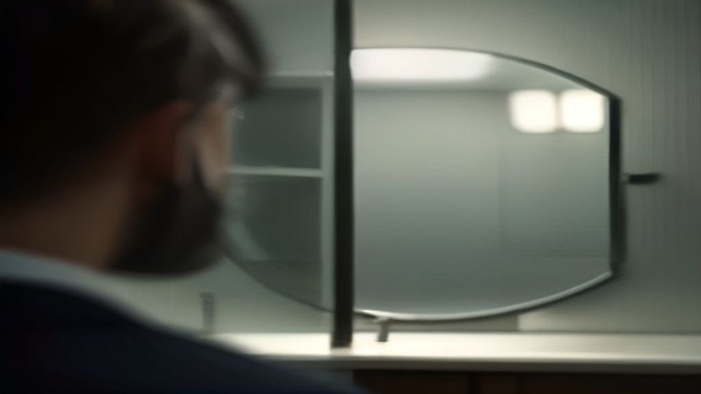

La chiusura della catena Dottor D: un campanello d'allarme per l'odontoiatria italiana

La chiusura della catena Dottor D: un campanello d'allarme per l'odontoiatria italiana
La notizia della chiusura della catena di studi dentistici Dottor D ha suscitato grande preoccupazione nel settore odontoiatrico italiano. La decisione di chiudere queste strutture, che hanno offerto servizi di alta qualità a migliaia di pazienti in tutta Italia, solleva interrogativi sulla sostenibilità del modello di business dell'odontoiatria nel nostro paese.
Il problema: la salute come prodotto commerciale
Secondo l'ANDI (Associazione Nazionale Dentisti Italiani), la chiusura della catena Dottor D è un campanello d'allarme per l'intero settore odontoiatrico. La salute non può essere considerata un prodotto commerciale, ma piuttosto un diritto fondamentale dei cittadini. Tuttavia, la crescente pressione commerciale e la concorrenza nel settore stanno minacciando la qualità e la sostenibilità dei servizi sanitari.
L'agitazione: la reazione dei pazienti e degli operatori sanitari
I pazienti che hanno usufruito dei servizi della catena Dottor D sono preoccupati per la loro salute e il futuro delle loro cure. Gli operatori sanitari, invece, sono preoccupati per il loro lavoro e la sostenibilità del settore. La chiusura della catena Dottor D ha sollevato una serie di interrogativi sulla gestione della sanità in Italia e sulla necessità di un modello di business più sostenibile e orientato al paziente.
La soluzione: un modello di business più sostenibile e orientato al paziente
Per risolvere il problema della sostenibilità del settore odontoiatrico, è necessario adottare un modello di business più sostenibile e orientato al paziente. Ciò significa investire nella formazione e nell'aggiornamento degli operatori sanitari, migliorare la qualità dei servizi e ridurre i costi. Inoltre, è fondamentale rafforzare la collaborazione tra gli operatori sanitari, le istituzioni sanitarie e le autorità competenti per garantire una gestione più efficiente e sostenibile del settore.
Inoltre, è importante promuovere la prevenzione e l'educazione sanitaria per ridurre la domanda di servizi sanitari e migliorare la salute generale della popolazione. Ciò può essere raggiunto attraverso campagne di sensibilizzazione, programmi di prevenzione e interventi di educazione sanitaria.
Conclusione
La chiusura della catena Dottor D è un campanello d'allarme per l'odontoiatria italiana. È necessario adottare un modello di business più sostenibile e orientato al paziente per garantire la qualità e la sostenibilità dei servizi sanitari. La collaborazione tra gli operatori sanitari, le istituzioni sanitarie e le autorità competenti è fondamentale per promuovere la prevenzione e l'educazione sanitaria e migliorare la salute generale della popolazione.
", "Article_HTML_EN": "The Closure of Dottor D Chain: A Wake-Up Call for Italian Dentistry
The news of the closure of the Dottor D chain of dental clinics has raised concerns in the Italian dental sector. The decision to close these facilities, which have provided high-quality services to thousands of patients across Italy, raises questions about the sustainability of the dental business model in our country.
The Problem: Health as a Commercial Product
According to the ANDI (Italian National Dentists Association), the closure of the Dottor D chain is a wake-up call for the entire dental sector. Health cannot be considered a commercial product, but rather a fundamental right of citizens. However, the increasing commercial pressure and competition in the sector are threatening the quality and sustainability of healthcare services.
The Agitation: The Reaction of Patients and Healthcare Operators
Patients who have used the services of the Dottor D chain are concerned about their health and the future of their care. Healthcare operators, on the other hand, are concerned about their jobs and the sustainability of the sector. The closure of the Dottor D chain has raised a series of questions about the management of healthcare in Italy and the need for a more sustainable and patient-oriented business model.
The Solution: A More Sustainable and Patient-Oriented Business Model
To solve the problem of the sustainability of the dental sector, it is necessary to adopt a more sustainable and patient-oriented business model. This means investing in the training and updating of healthcare operators, improving the quality of services, and reducing costs. Furthermore, it is essential to strengthen the collaboration between healthcare operators, healthcare institutions, and competent authorities to ensure more efficient and sustainable management of the sector.
Additionally, it is important to promote prevention and health education to reduce the demand for healthcare services and improve the general health of the population. This can be achieved through awareness campaigns, prevention programs, and health education interventions.
Conclusion
The closure of the Dottor D chain is a wake-up call for Italian dentistry. It is necessary to adopt a more sustainable and patient-oriented business model to ensure the quality and sustainability of healthcare services. The collaboration between healthcare operators, healthcare institutions, and competent authorities is essential to promote prevention and health education and improve the general health of the population.
", "Slug": "la-chiusura-della-catena-dottor-d", "Topic": "odontoiatria", "Image_Prompt_EN": "A detailed image of a dentist's office with a cinematic background, highlighting the importance of oral health and the need for sustainable and patient-oriented dental care.", "LinkedIn_Post": "🚀 Nuovo approfondimento per gli operatori sanitari! 🚀 La chiusura della catena Dottor D solleva interrogativi sulla sanità italiana. 🤔 Come possiamo garantire la qualità e la sostenibilità dei servizi sanitari? 🚀 Leggi il nostro articolo per scoprire la soluzione: https://blogs.rmstudio.app/dentis/la-chiusura-della-catena-dottor-d.html #odontoiatria #sanità #sostenibilità" } ```Scopri l'Intelligenza Artificiale per la tua attività
Prova le soluzioni B2B di RM Studio e ottimizza le tue vendite.
Scopri Dentis AI